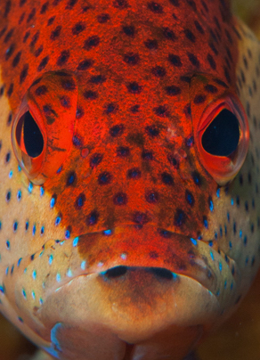

W
Watalibi
Le Watalibi (Cephalopholis fulva), aussi appelé « tanche » en Guadeloupe, est un poisson que l’on retrouve dans l’Atlantique tropical ouest, du Sud de la Caroline (USA) au Brésil.
Ce poisson a une taille d'environ 25 cm mais il peut atteindre parfois 35 cm : il est un des plus petits mérous de la zone caraïbe.
